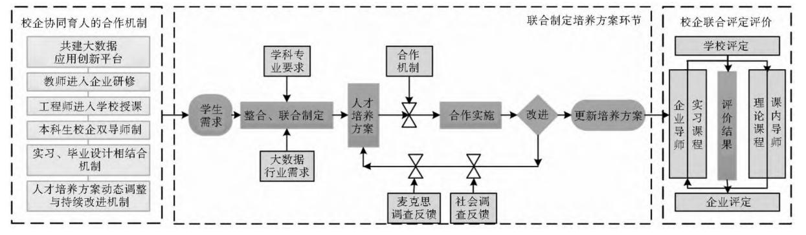
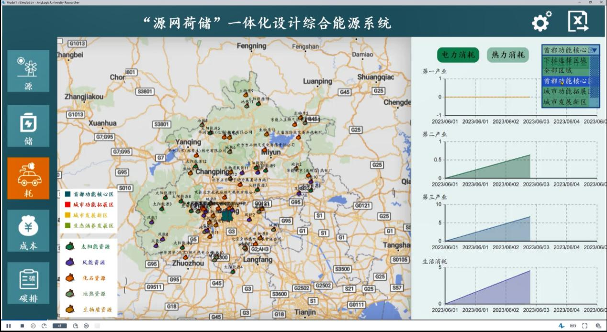
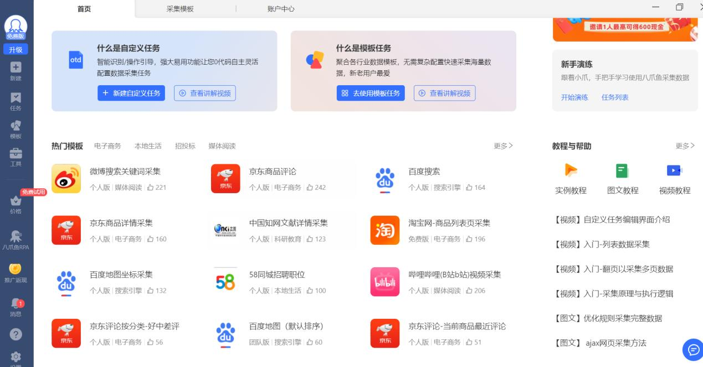
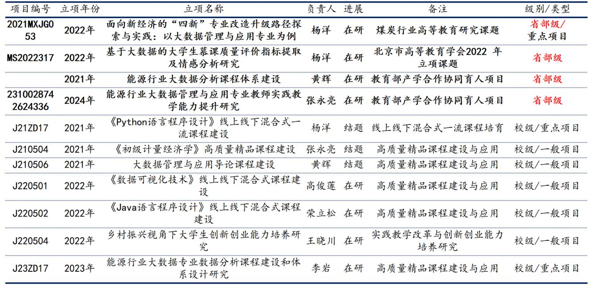
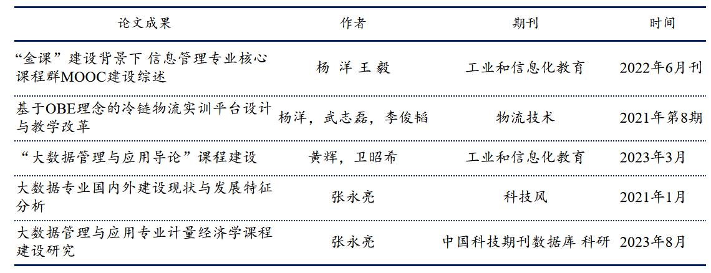

大数据管理与应用专业核心在于"应用"和"管理"，实践性是其显著特征，必须强化实践教育在人才培养中的地位和作用。综合全面的大数据应用技能培养需要通过系统的实践教学环节来保证。
与产业企业生态对接，整合教学、培训、科研和产业实践资源，共建实训基地、大数据人才培养基地等，协助院校解决人才出口问题。为提高"强实践"的教学效果，我们已于2021年与华育兴业合作，建立了大数据课程实训平台，后又与东方国信、拓尔思等达成合作意向，共同申请了教育部供需对接就业育人项目"大数据管理与应用专业就业育人平台搭建与实践项目"。
1
产学协同育人培养模式
强调产学结合，产学互惠 · 三个核心环节
产学协同育人培养模式强调产学结合，产学互惠。将产学协同育人培养模式分为建立校企协同机制、联合制订人才培养方案以及校企联合评定评价机制三个环节。
① 校企协同机制
- 校企共建大数据应用创新平台
- 教师进入企业研修
- 企业专家进入学校授课
- 本科生校企双导师制
- 实习和毕业设计相结合
- 以学分制为基础的认知实习课程
→
② 联合制订培养方案
- 针对需求动态调整
- 联合培养中周期性更新
- 符合产业发展及人才需求
- AnyLogic虚拟仿真软件
- 八爪鱼数据采集器
- Canvas数据挖掘平台
→
③ 校企联合评价机制
- 学生职业能力及专业素质评价
- 实习课程成绩共同表征
- 课程评价标准由双导师共同制定
- 培养期结束颁发认定证书
- 企业导师+课内导师联合评定

图14 产学协同育人培养模式流程（校企协同机制 → 联合制订培养方案 → 校企联合评定评价）
2
三个核心环节详解
从机制建立到方案制定，再到评价落地的完整闭环
1
建立校企协同机制
- 在"校企生"三方需求达成共识
- 2021年与华育兴业建立实训平台
- 2021年7月邀请企业专家到校培训
- 2024年1月参加拓尔思师资培训班
- 与拓尔思达成助课合作协议
- 2024年6月邀请吴琳琳老师到校讲授
2
联合制订培养方案
- 以需求动态调整为关键
- 购买AnyLogic虚拟仿真软件
- 用于《系统建模与仿真》课程
- 购买八爪鱼数据采集器
- 用于《数据采集与清洗》课程
- 设计融入正式培养方案
3
校企联合评定评价
- 职业能力与专业素质双维度评价
- 理论课程与实习课程成绩共同表征
- 课内导师与企业导师共同制定标准
- 培养期结束颁发认定证书
- 形成完整的人才培养闭环
3
合作企业与机构
多元产学合作生态 · 共建人才培养基地
北京华育兴业科技有限公司
甲骨文大数据（中国区）唯一运营商
2021年建立大数据课程实训平台
部署硬件平台+3个软件平台
2021年7月举办教师培训活动
东方国信
数据科学与大数据认证培训
达成就业育人项目合作意向
大数据考试认证培训中心合作
共同申请教育部供需对接就业育人项目
拓尔思（TRS）
全国高校数据科学与大模型师资培训
2024年1月组织多位老师参加师资培训班
达成助课合作协议
2024年6月利用Canvas平台讲授在线大数据分析
北京格瑞纳电子产品有限公司
虚拟仿真软件合作
购买AnyLogic虚拟仿真软件
应用于《系统建模与仿真》课程
深圳金英教育科技有限公司
数据采集工具合作
购买八爪鱼数据采集器
应用于《数据采集与清洗》课程
广州就学在线科技有限公司（CDA）
技能认证合作
2023年12月达成合作协议
共同申报教育部产学合作协同育人项目
CDA数据分析师认证培训指导
4
实践教学资源与工具
专业软件+真实数据+虚拟仿真 · 夯实实践教学基础

图15 购买AnyLogic虚拟仿真软件，用于《系统建模与仿真》课程（"源网荷储"一体化设计综合能源系统仿真界面）

图16 购买八爪鱼数据采集器，用于《数据采集与清洗》课程（支持微博、京东、百度等主流平台数据采集）
5
主要成果总结
近五年教改项目成果 · 代表性教学论文 · 张永亮老师获奖情况
"新文科"是建设高等教育强国的一种创新性探索。自专业重组以来，所有老师围绕大数据专业建设，产出了诸多成果。
- 近五年承担教改项目共13项，省部级4项，围绕大数据专业建设形成5篇
- "课程思政"示范课建设项目5个，其中《宏观经济学》获校级课程思政示范课三等奖
- 校级优秀本科全程导师奖6项，院级优秀本科全程导师奖12项
- 教学质量奖5项，北京市优秀毕业（论文）导师奖1项
13
教改项目
（4项省部级）
（4项省部级）
5
课程思政
示范课建设项目
示范课建设项目
6
校级优秀本科
全程导师奖
全程导师奖
5
教学质量奖
1
北京市优秀毕业
（论文）导师奖
（论文）导师奖

图17 近五年代表性教改项目成果（共13项，含4项省部级）

图18 代表性教学论文成果
张永亮老师代表性荣誉
- 全国优秀科研成果评选活动优秀论文一等奖（国家级，中国教育科学研究院、中国教育学会颁发）
- 高等学校人文社会科学优秀成果二等奖（省部级，山东省教育厅颁发）
- 龙软科技教师贡献奖-优秀青年教师奖（全校5人）
- 校级优秀教学质量奖-青年教师教学优秀奖
- 校级教学创新大赛-教学创新奖（两次）
- 管理学院教学基本功大赛一等奖（1次）和二等奖（1次）
- 2023年度校级优秀共产党员
- 第四届全校教师教学创新大赛（副高组）二等奖
- 决策科学与大数据研究院成员聘书（聘期五年）